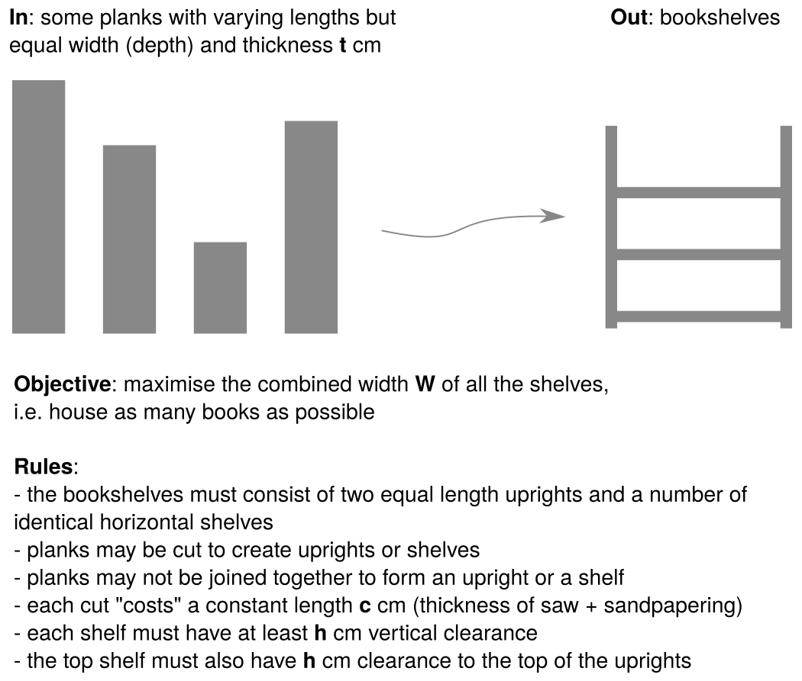

Proposed by Felix Ulrich-Oltean
The Bookshelves Problem
We are given a set of planks of wood, all of the same width and thickness but
with a variety of lengths and we are attempting to construct some bookshelves in
such a way that we can accommodate as many books as possible. This entry is
based on a real problem of trying to make some bookshelves out of some old
skirting boards.

Assumptions and restrictions:
- we use two vertical equal-length pieces for the sides of the unit and one
piece for each shelf
- each plank may be cut zero or more times to make pieces, but two planks or
pieces may not be joined to make a longer piece
- each shelf must allow enough vertical space for the height of a book
- the top shelf must be below the top of the vertical sides by at least the
height of a book, i.e. the vertical sides should provide bookends for the top
shelf
- each shelf must be of equal width
Information given:
- thickness of planks in cm
- thickness of the cut in cm - a bit of length is lost every time we cut and
sand down
- shelf clearance height in cm (includes height of book and space to extract
book)
- a list of plank lengths
Decisions or outputs required:
The decision is where to cut each plank: i.e. a (potentially) empty list of cut
points for each plank
In addition the solution should make clear:
- the number of shelves
- the width of each shelf
- the overall height of the bookshelf unit
{kind=link}
 This work is licensed under a Creative Commons Attribution 4.0 International License.
This work is licensed under a Creative Commons Attribution 4.0 International License.